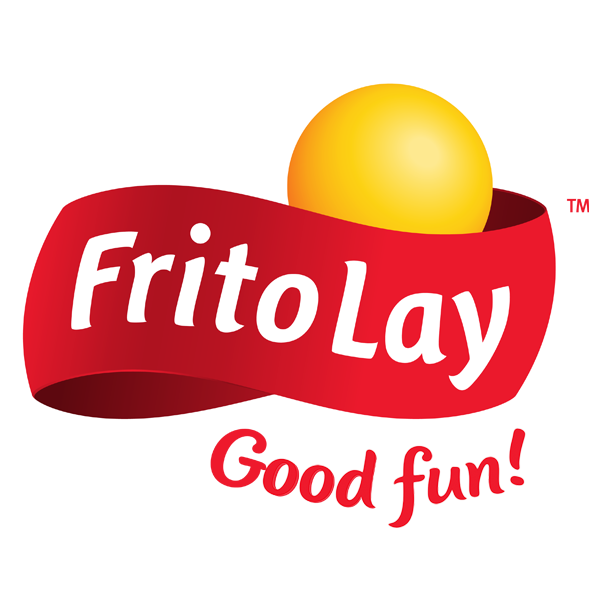
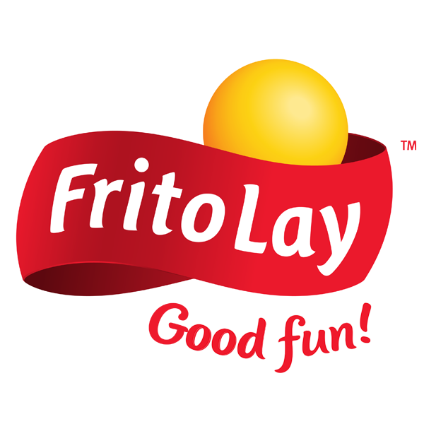

Mock Route Sales Representatives (RSRs).
Project Details
CLIENT
 

Product
Mobile Application
Skills
Design Strategy
User Research & Testing
Interactive Prototyping
Stakeholder Management
My role
Senior UX
Timeline
Q1 2020 - Q1 2021
As a Senior Designer at IBM
, I was deeply involved in the launch and design of Sales Hub
+, a cornerstone of Frito-Lay’s digital transformation. The project migrated over 1,000
screens from legacy handheld devices to a modern iOS experience used daily by 25,000 frontline
employees.
My role was to build out all Services & Appointments flows, establish reusable component patterns that could scale not only within my product but across the entire platform
as well as conduct user interviews, present prototypes, and validate my work through the research findings to both Pepsico Leadership and our internal design teams.
I kept key stakeholders at PepsiCo informed and ensured our team’s work aligned with their broader business vision,
while also helping deliver a cohesive, intuitive experience for frontline employees.
Problem
The handheld scanning devices used by Frito-Lay’s Route Sales Representatives (RSRs) were outdated and inefficient, making everyday tasks like inventory, sales, and delivery tracking more difficult than they needed to be. These legacy tools caused workflow friction and frustration, limiting productivity and falling short of modern user expectations.
We needed to fully understand everything first, to ensure we gave users a better experience they were excited to use.
To address this, our team began with in-depth field research. We traveled to Plano, Texas, to ride along with RSRs, observing how they used the tools and speaking with them throughout the day. This revealed key usability issues and helped us shape a design strategy focused on efficiency, clarity, and alignment with both user needs and business priorities.
Finding a Solution

We built nearly a dozen user personas based on quality data on who our end users would be.
We conducted extensive user research and built our golden-thread, laying out all key verticals and areas to re-design.
Wireframes established the foundational layout for key user flows.
We began with a human-centered approach, aiming to understand everything first; all to better support the frontline employees. Using insights from extensive user research, we built detailed personas and early wireframes, leading to a complete golden thread, our cohesive vision for the new application.
We didn’t just migrate over 1,000 screens; we redesigned them from the ground up.
My focus was on the Scheduling and Service Appointment pillar, creating intuitive flows for time tracking, inventory scanning, and approvals. I coordinated and conducted several rounds of interviews and usability tests, collaborating closely with fellow designers, researchers, and developers.
I also maintained daily alignment with PepsiCo leadership and product owners to keep business needs front and center.
Results

We ultimately delivered over 1000 unique screens, carefully and thoughtfully designed.
By aligning with their real-world needs, we delivered a tool that genuinely improved the frontlines daily work-life.
The launch of Sales Hub + transformed how PepsiCo’s frontline employees managed daily tasks, replacing outdated tools with a streamlined and intuitive iOS experience. By embedding ourselves in their routines, we delivered a user-centered solution that improved efficiency and reduced friction. This project highlighted the value of deep research, cross-functional collaboration, and scalable design systems, and continues to shape how I approach complex challenges as a Designer.